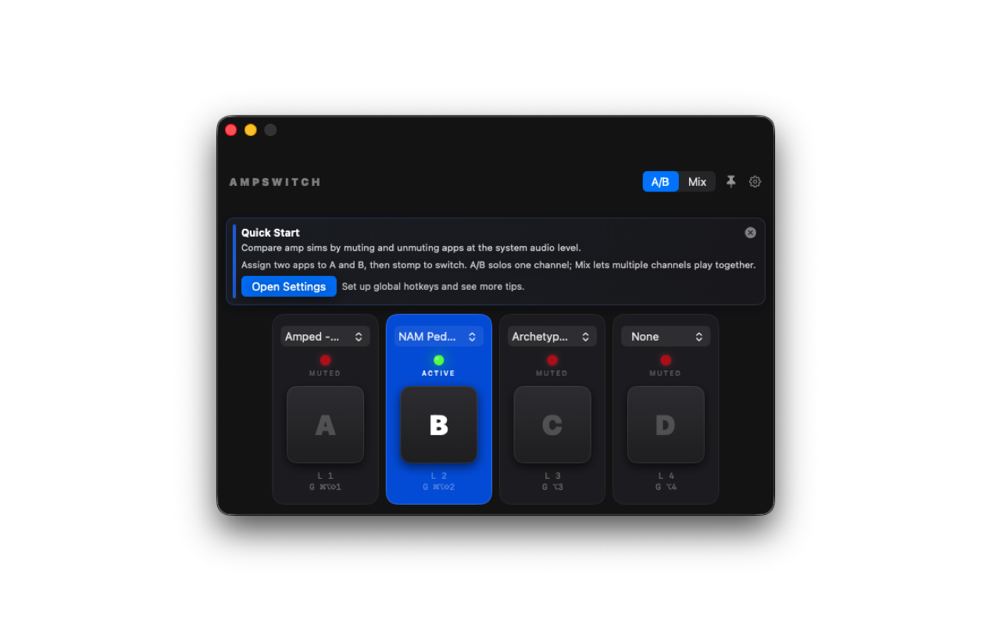
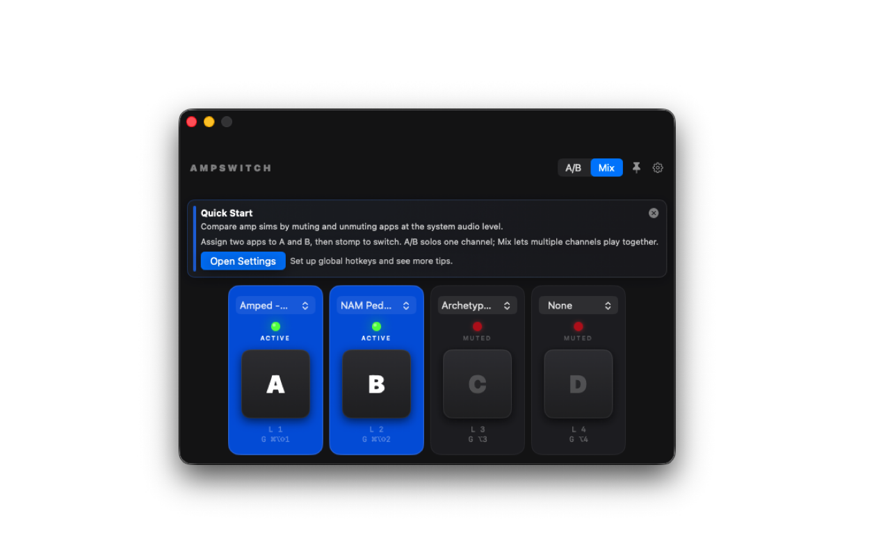

Fast A/B Switching
Solo-compare tones instantly using stomp buttons or hotkeys while you play.
AmpSwitch lets you compare amp sims and audio apps with stomp-style A/B switching, Mix mode, and customizable hotkeys, without menu diving while you play.
Built for guitarists testing tones, patches, and app chains on Mac.

Assign up to four running audio apps to channels A-D and switch between them at the system audio level.
Solo-compare tones instantly using stomp buttons or hotkeys while you play.
Toggle channels independently to hear multiple apps at once.
Use local hotkeys while focused, plus optional global hotkeys with Accessibility access.
Keep AmpSwitch visible while using other audio apps and plugin standalones.
Remembers channel assignments, switch mode, and hotkey settings between launches.
Quick Start onboarding and settings help for global hotkeys and permissions.
Drop your exported app screenshots into the website/assets folder using the filenames listed below.


AmpSwitch uses macOS permissions only for features you enable.